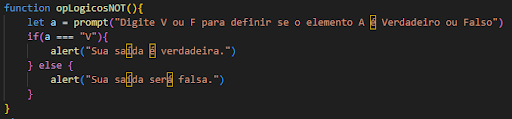
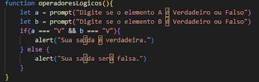
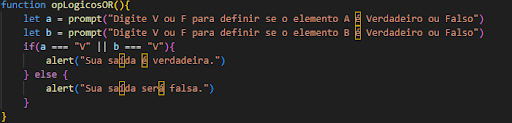

Operadores lógicos são usados em programação e lógica para combinar expressões e formar condições mais complexas, resultando em um valor booleano (verdadeiro ou falso).
Os três principais operadores lógicos são:
Veja um exemplo de código:

Este código é um exemplo da porta lógica AND funcional.
Este é um exemplo de código prático:
Estes são os códigos utilizados no botões:

